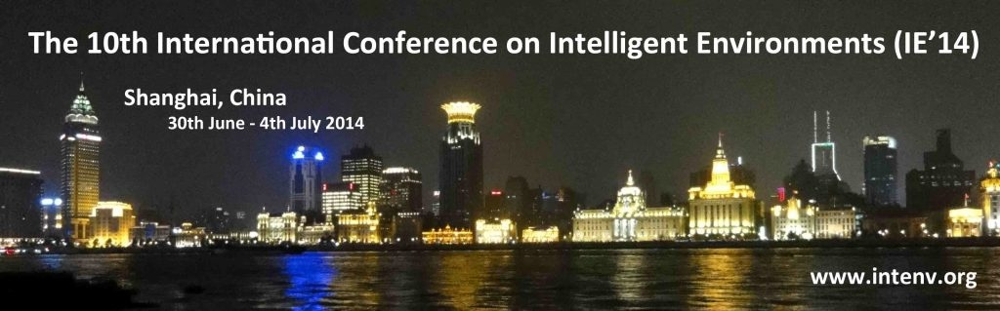

Workshop on Hyperrealistic Intelligent Environments 2014
30th June. Shanghai, China

This event was co-located with the 10th International Conference on Intelligent Environments IE’14 (2nd–4th July 2014, Shanghai, China).
More information on the venue, including tourism, travel and hotels, can be found on the main conference website.